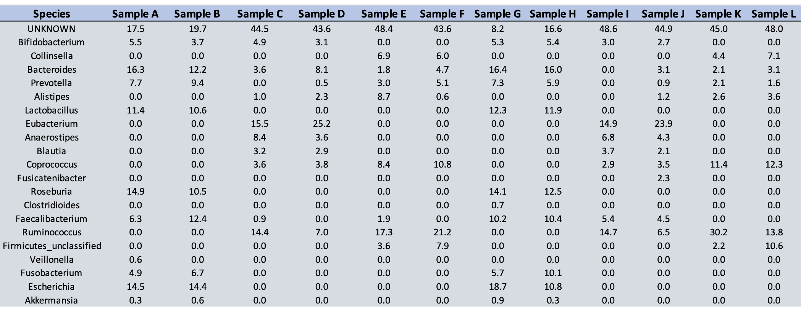
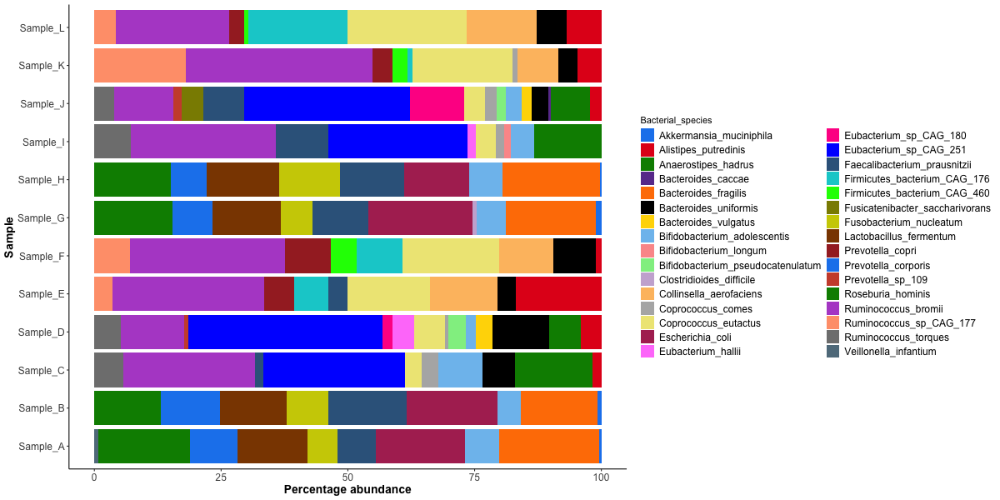
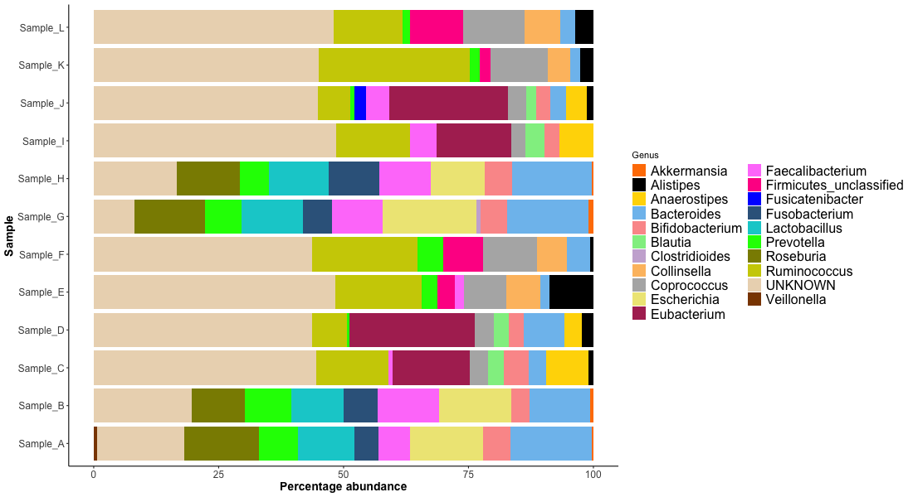
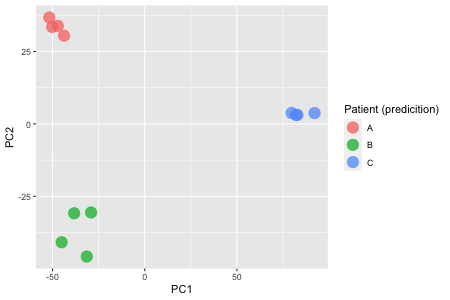
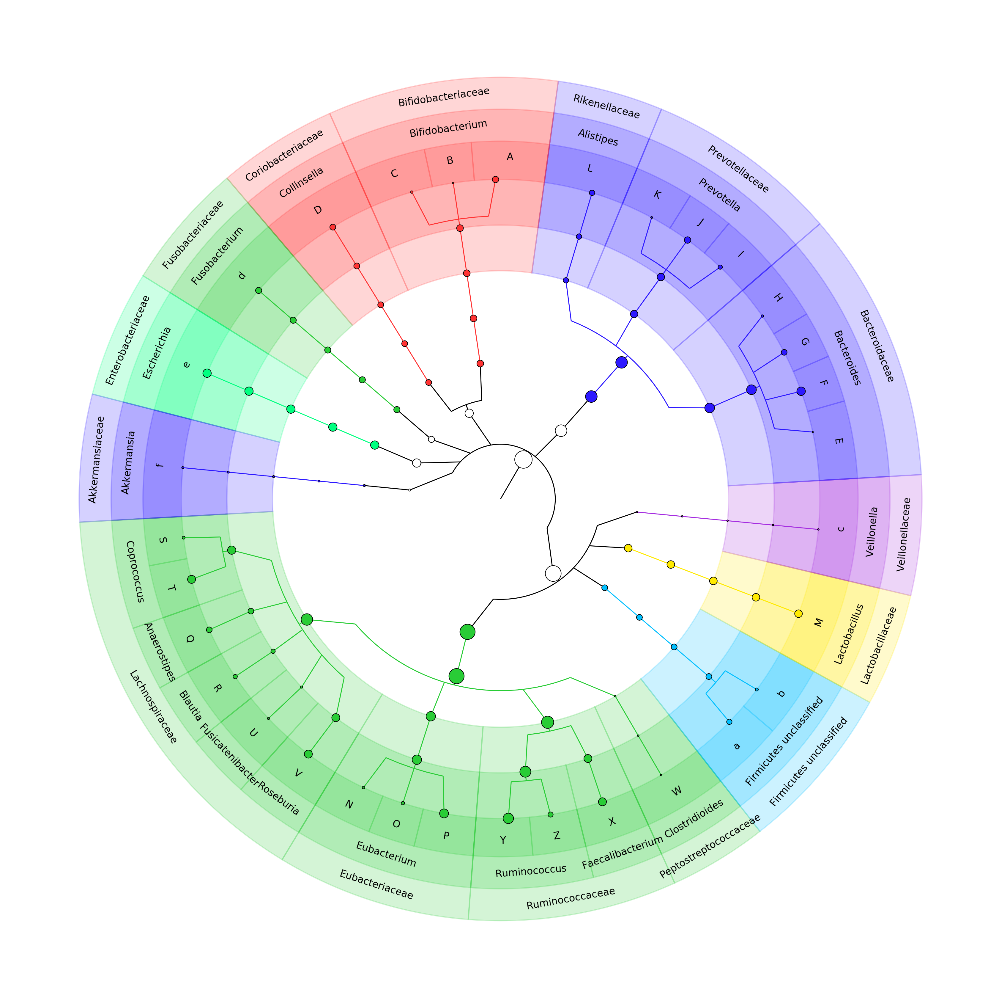
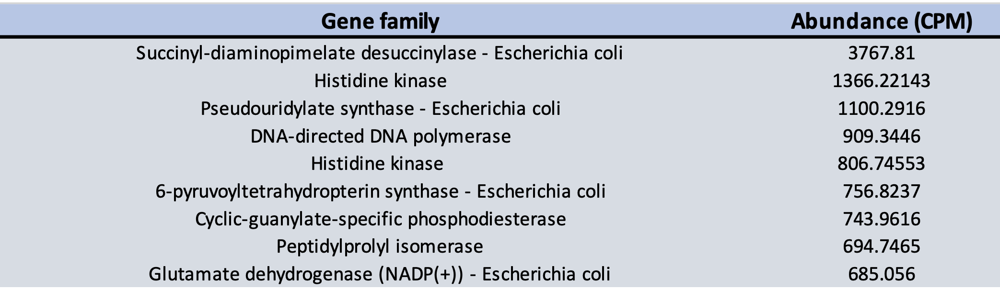
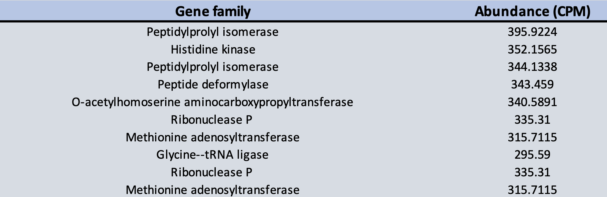
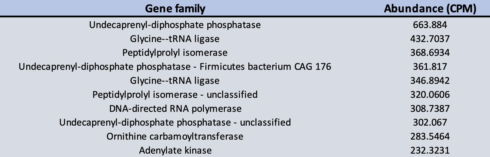

Results
Table of taxonomic abundances

Figure 1
Stacked bar plot representing percentage abundance at the species level

R Code
please click here for code
# Load packages
library(ggplot2)
library(dplyr)
# input merged abundance data
sb_df <- read.csv(file = "~/sb_int/metaphlan/merged/merged_abundance_table_species_long.txt")
# gross conversion to percentage (fix this with loop)
sL <- as.data.frame((sb_df$value[1:32]/sum(sb_df$value[1:32]))*100)
colnames(sL) <- c("Percentage")
sK <- as.data.frame((sb_df$value[33:64]/sum(sb_df$value[33:64]))*100)
colnames(sK) <- c("Percentage")
sJ <- as.data.frame((sb_df$value[65:96]/sum(sb_df$value[65:96]))*100)
colnames(sJ) <- c("Percentage")
sI <- as.data.frame((sb_df$value[97:128]/sum(sb_df$value[97:128]))*100)
colnames(sI) <- c("Percentage")
sH <- as.data.frame((sb_df$value[129:160]/sum(sb_df$value[129:160]))*100)
colnames(sH) <- c("Percentage")
sG <- as.data.frame((sb_df$value[161:192]/sum(sb_df$value[161:192]))*100)
colnames(sG) <- c("Percentage")
sF <- as.data.frame((sb_df$value[193:224]/sum(sb_df$value[193:224]))*100)
colnames(sF) <- c("Percentage")
sE <- as.data.frame((sb_df$value[225:256]/sum(sb_df$value[225:256]))*100)
colnames(sE) <- c("Percentage")
sD <- as.data.frame((sb_df$value[257:288]/sum(sb_df$value[257:288]))*100)
colnames(sD) <- c("Percentage")
sC <- as.data.frame((sb_df$value[289:320]/sum(sb_df$value[289:320]))*100)
colnames(sC) <- c("Percentage")
sB <- as.data.frame((sb_df$value[321:352]/sum(sb_df$value[321:352]))*100)
colnames(sB) <- c("Percentage")
sA <- as.data.frame((sb_df$value[353:384]/sum(sb_df$value[353:384]))*100)
colnames(sA) <- c("Percentage")
# concat dataframes
new <- rbind(sL, sK, sJ, sI, sH, sG, sF, sE, sD, sC, sB, sA)
# add to main dataframe
sb_df_percentage <- cbind(sb_df, new)
# edit column names
colnames(sb_df_percentage) <- c("No", "Bacterial_species", "Sample", "Abundance", "Percentage")
sb_df_percentage
# Stacked
hori <-
ggplot(sb_df_percentage,
aes(fill = Bacterial_species,
y = Sample, x = Percentage)) + geom_bar(position =
"stack",
stat = "identity")
hori
# colours eeep!
c33 <- c(
"dodgerblue2", "#E31A1C", # red
"green4",
"#6A3D9A", # purple
"#FF7F00", # orange
"black", "gold1",
"skyblue2", "#FB9A99", # lt pink
"palegreen2",
"#CAB2D6", # lt purple
"#FDBF6F", # lt orange
"gray70", "khaki2",
"maroon", "orchid1", "deeppink1", "blue1", "steelblue4",
"darkturquoise", "green1", "yellow4", "yellow3",
"darkorange4", "brown", "dodgerblue2", "tomato3",
"green4",
"mediumorchid3",
"lightsalmon", # orange
"grey50","lightskyblue4")
# new colours + classic theme
hori.final <- hori + scale_fill_manual(values=c33) + theme_classic()
hori.final
# plot final PCA plot and save to file
png("sb_int/mkdoc_sbint/docs/figs/species_stacked.png", width = 1100, height = 400)
hori.final
dev.off()
Figure 2
Stacked bar plot representing percentage abundance at the genus level, including unknown portion

R code
please click here for code
##### Genus stacked bar plot (with unknown portion) #####
# input merged species level abundance data
genus_df <- read.csv(file = "~/sb_int/metaphlan/merged/merged_abundance_table_genus_unknown_long.csv")
# edit column names
colnames(genus_df) <- c("No", "Genus", "Sample", "Percentage abundance")
genus_df
# remove .metagenome from sample name
genus_df <- genus_df %>%
mutate(Sample = str_remove(Sample, ".metagenome"))
# initial ggplot
hori <-
ggplot(genus_df,
aes(fill = Genus,
y = Sample, x = `Percentage abundance`)) + geom_bar(position =
"stack",
stat = "identity")
hori
# colours eeep!
c21 <- c("#FF7F00", # orange
"black", "gold1",
"skyblue2", "#FB9A99", # lt pink
"palegreen2",
"#CAB2D6", # lt purple
"#FDBF6F", # lt orange
"gray70", "khaki2",
"maroon", "orchid1", "deeppink1", "blue1", "steelblue4",
"darkturquoise", "green1", "yellow4", "yellow3","#ebd8bd",
"darkorange4")
# new colours + classic theme
hori.genus.final <- hori + scale_fill_manual(values=c21) + theme_classic() +
theme(axis.text=element_text(size=12),
axis.title=element_text(size=14,face="bold"), legend.text=element_text(size=16))
hori.genus.final
# plot final PCA plot and save to file
png("sb_int/mkdoc_sbint/docs/figs/genus_stacked.png", width = 1100, height = 600)
hori.genus.final
dev.off()
Figure 3
PCA visulised using first two principal components. Kmeans clustering used to visulise community structure.

Perhaps the samples are 4 replicates of three gut microbiome samples?
R code
please click here for code
## load libraries
library(tidyverse)
library(vegan)
# input merged abundance data
sb_df <- read.csv(file = "~/sb_int/metaphlan/merged/merged_abundance_table_species.txt", sep = "\t")
sb_df
# convert to a matrix
sb_mat = sb_df %>%
column_to_rownames("body_site") %>%
as.matrix() %>%
t()
## PCA Plot
# Generate a distance matrix based on abundance
dist_mat = vegdist(sb_mat, method = "manhattan")
# Multidimensional scaling of the matrix (PCA)
cmd_res = cmdscale(dist_mat,
k = (nrow(sb_mat) - 1),
eig = TRUE)
# check data structure
str(cmd_res)
# Select first two principal coordinates
pca_df = tibble(PC1 = cmd_res$points[,1],
PC2 = cmd_res$points[,2])
# k means clustering to predicted community structure (cohorts from here on)
set.seed(100)
x <- kmeans(dist_mat, centers = 3)
kmeans <- as.data.frame(x$cluster)
kmeans$`x$cluster`[kmeans$`x$cluster` == "1"] <- "A"
kmeans$`x$cluster`[kmeans$`x$cluster` == "2"] <- "B"
kmeans$`x$cluster`[kmeans$`x$cluster` == "3"] <- "C"
colnames(kmeans) <- "Patient (predicition)"
kmeans
# Add the predicted cohort as meta data to PCOA dataframe
pca_meta <- bind_cols(pca_df, kmeans)
pca_meta
# ggplot coloured by cohort clustering
pca_plot <- ggplot(pca_meta, aes(x = PC1, y = PC2, colour = `Patient (predicition)`)) +
geom_point(alpha = 0.75, size = 5) + scale_size(guide = "none") + scale_alpha(guide = "none")
# plot final PCA plot and save to file
png("sb_int/mkdoc_sbint/docs/figs/PCA_abundance_kmeans.png", width = 450, height = 300)
pca_plot
dev.off()
Figure 4
Cladogram of merged microbiomes with circle size representing abundance

Bash commands
please click here for code
# Create a seperate conda package due to python2.7 dependencies
conda create -n graphlan python=2.7
conda activate graphlan
conda install -c biobakery graphlan
conda install export2graphlan biopython
# reformat abundance table
tail -n +2 merged_abundance_table.txt | cut -f1,3- > merged_abundance_table_reformatted.txt
# script that generates the two input files for GraPhlAn (the tree and annotation files)
# export2graphlan.py -h for flag definitions
export2graphlan.py --skip_rows 1 -i merged_abundance_table_reformatted.txt --tree merged_abundance.tree.txt --annotation merged_abundance.annot.txt --most_abundant 100 --abundance_threshold 1 --least_biomarkers 10 --annotations 5,6 --external_annotations 7 --min_clade_size 1
# generate .xml file
graphlan_annotate.py --annot merged_abundance.annot.txt merged_abundance.tree.txt merged_abundance.xml
# run phylo
graphlan.py --dpi 300 merged_abundance.xml merged_abundance.png --external_legends
# copy to mkdocs figs folder
cp merged_abundance.png ~/sb_int/mkdoc_sbint/docs/figs/
Table 2
Normalised gene family abundance for predicted patient one (Sample A, B, G, H)

Table 3
Normalised gene family abundance for predicted patient one (Sample C, D, I, J)

Table 4
Normalised gene family abundance for predicted patient one (Sample E, F, K, L)
